Crédits des blasons
Quand tu complètes un département en Terra, son blason s'affiche sur ta carte « Ma France ». Ces dessins viennent de Wikimédia Commons : voici leur auteur et leur licence. Les images ont été réduites pour le jeu. Les cantons luxembourgeois n'ayant pas d'armoiries (sauf Remich), on montre celles de leur commune chef-lieu.
| Territoire | Auteur | Licence | Source | |
|---|---|---|---|---|
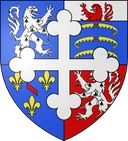 | 01 · Ain | — | CC BY-SA 3.0 | Commons |
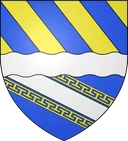 | 02 · Aisne | — | CC BY-SA 3.0 | Commons |
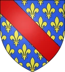 | 03 · Allier | Syryatsu | Public domain | Commons |
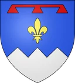 | 04 · Alpes-de-Haute-Provence | — | Public domain | Commons |
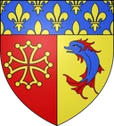 | 05 · Hautes-Alpes | Syryatsu | Public domain | Commons |
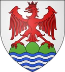 | 06 · Alpes-Maritimes | Ipankonin | CC BY-SA 3.0 | Commons |
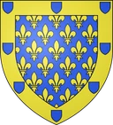 | 07 · Ardèche | Syryatsu | Public domain | Commons |
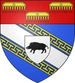 | 08 · Ardennes | — | CC BY-SA 3.0 | Commons |
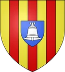 | 09 · Ariège | — | CC BY-SA 3.0 | Commons |
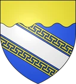 | 10 · Aube | — | CC BY-SA 3.0 | Commons |
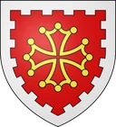 | 11 · Aude | Syryatsu | Public domain | Commons |
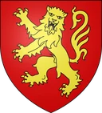 | 12 · Aveyron | — | CC BY-SA 3.0 | Commons |
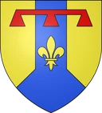 | 13 · Bouches-du-Rhône | — | Public domain | Commons |
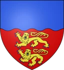 | 14 · Calvados | — | CC BY-SA 3.0 | Commons |
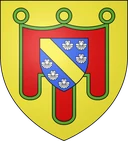 | 15 · Cantal | — | CC BY-SA 3.0 | Commons |
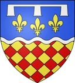 | 16 · Charente | — | CC BY-SA 3.0 | Commons |
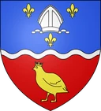 | 17 · Charente-Maritime | — | CC BY-SA 3.0 | Commons |
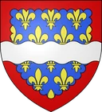 | 18 · Cher | Syryatsu | Public domain | Commons |
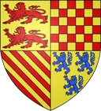 | 19 · Corrèze | — | CC BY-SA 3.0 | Commons |
| 2A · Corse-du-Sud | MarianSigler | Public domain | Commons | |
| 2B · Haute-Corse | MarianSigler | Public domain | Commons | |
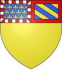 | 21 · Côte-d'Or | — | CC BY-SA 3.0 | Commons |
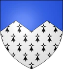 | 22 · Côtes-d'Armor | — | CC BY-SA 3.0 | Commons |
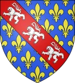 | 23 · Creuse | — | CC BY-SA 3.0 | Commons |
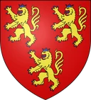 | 24 · Dordogne | — | Public domain | Commons |
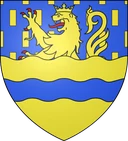 | 25 · Doubs | — | CC BY-SA 3.0 | Commons |
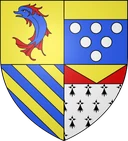 | 26 · Drôme | — | CC BY-SA 3.0 | Commons |
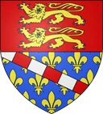 | 27 · Eure | — | CC BY-SA 3.0 | Commons |
| 28 · Eure-et-Loir | — | CC BY-SA 3.0 | Commons | |
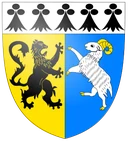 | 29 · Finistère | Ttog | Public domain | Commons |
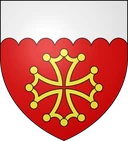 | 30 · Gard | — | CC BY-SA 3.0 | Commons |
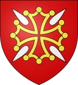 | 31 · Haute-Garonne | — | CC BY-SA 3.0 | Commons |
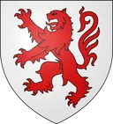 | 32 · Gers | Syryatsu | Public domain | Commons |
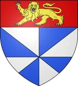 | 33 · Gironde | — | CC BY-SA 3.0 | Commons |
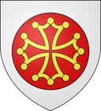 | 34 · Hérault | Syryatsu | Public domain | Commons |
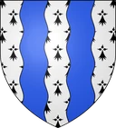 | 35 · Ille-et-Vilaine | — | CC BY-SA 3.0 | Commons |
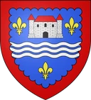 | 36 · Indre | Syryatsu | Public domain | Commons |
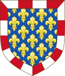 | 37 · Indre-et-Loire | Carlodangio | CC BY-SA 4.0 | Commons |
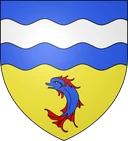 | 38 · Isère | — | CC BY-SA 3.0 | Commons |
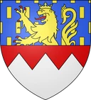 | 39 · Jura | — | CC BY-SA 3.0 | Commons |
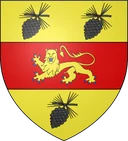 | 40 · Landes | Syryatsu | CC BY-SA 3.0 | Commons |
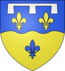 | 41 · Loir-et-Cher | — | CC BY-SA 3.0 | Commons |
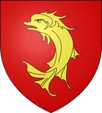 | 42 · Loire | — | CC BY-SA 3.0 | Commons |
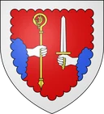 | 43 · Haute-Loire | — | CC BY-SA 3.0 | Commons |
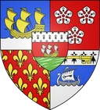 | 44 · Loire-Atlantique | Zorlot | CC BY-SA 4.0 | Commons |
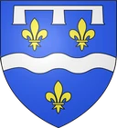 | 45 · Loiret | — | CC BY-SA 3.0 | Commons |
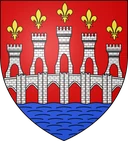 | 46 · Lot | — | Public domain | Commons |
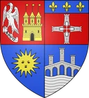 | 47 · Lot-et-Garonne | — | CC BY-SA 3.0 | Commons |
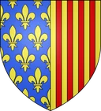 | 48 · Lozère | — | CC BY-SA 3.0 | Commons |
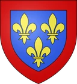 | 49 · Maine-et-Loire | Syryatsu | Public domain | Commons |
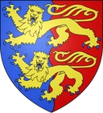 | 50 · Manche | — | CC BY-SA 3.0 | Commons |
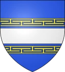 | 51 · Marne | — | Public domain | Commons |
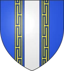 | 52 · Haute-Marne | — | Public domain | Commons |
| 53 · Mayenne | — | CC BY-SA 3.0 | Commons | |
| 54 · Meurthe-et-Moselle | — | CC BY-SA 3.0 | Commons | |
| 55 · Meuse | — | CC BY-SA 3.0 | Commons | |
| 56 · Morbihan | — | CC BY-SA 3.0 | Commons | |
| 57 · Moselle | — | CC BY-SA 3.0 | Commons | |
| 58 · Nièvre | Syryatsu | Public domain | Commons | |
| 59 · Nord | — | CC BY-SA 3.0 | Commons | |
| 60 · Oise | — | CC BY-SA 3.0 | Commons | |
| 61 · Orne | — | CC BY-SA 3.0 | Commons | |
| 62 · Pas-de-Calais | Syryatsu | Public domain | Commons | |
| 63 · Puy-de-Dôme | — | CC BY-SA 3.0 | Commons | |
| 64 · Pyrénées-Atlantiques | — | CC BY 3.0 | Commons | |
| 65 · Hautes-Pyrénées | Syryatsu | Public domain | Commons | |
| 66 · Pyrénées-Orientales | WikiMeGa | CC BY-SA 3.0 | Commons | |
| 67 · Bas-Rhin | — | CC BY-SA 3.0 | Commons | |
| 68 · Haut-Rhin | — | CC BY-SA 3.0 | Commons | |
| 69 · Rhône | Syryatsu | CC BY-SA 3.0 | Commons | |
| 70 · Haute-Saône | — | CC BY-SA 3.0 | Commons | |
| 71 · Saône-et-Loire | — | CC BY-SA 3.0 | Commons | |
| 72 · Sarthe | Syryatsu | Public domain | Commons | |
| 73 · Savoie | — | Public domain | Commons | |
| 74 · Haute-Savoie | — | Public domain | Commons | |
| 75 · Paris | RaphaëlMignon | CC BY 4.0 | Commons | |
| 76 · Seine-Maritime | — | CC BY 2.5 | Commons | |
| 77 · Seine-et-Marne | — | CC BY-SA 3.0 | Commons | |
| 78 · Yvelines | — | CC BY-SA 3.0 | Commons | |
| 79 · Deux-Sèvres | — | CC BY-SA 3.0 | Commons | |
| 80 · Somme | — | CC BY-SA 3.0 | Commons | |
| 81 · Tarn | Syryatsu | Public domain | Commons | |
| 82 · Tarn-et-Garonne | — | CC BY-SA 3.0 | Commons | |
| 83 · Var | — | Public domain | Commons | |
| 84 · Vaucluse | — | CC BY-SA 3.0 | Commons | |
| 85 · Vendée | — | CC BY 3.0 | Commons | |
| 86 · Vienne | — | CC BY-SA 3.0 | Commons | |
| 87 · Haute-Vienne | — | CC BY-SA 3.0 | Commons | |
| 88 · Vosges | — | CC BY-SA 3.0 | Commons | |
| 89 · Yonne | — | CC BY-SA 3.0 | Commons | |
| 90 · Territoire de Belfort | — | CC BY-SA 3.0 | Commons | |
| 91 · Essonne | — | CC BY-SA 3.0 | Commons | |
| 92 · Hauts-de-Seine | — | CC BY-SA 3.0 | Commons | |
| 93 · Seine-Saint-Denis | — | CC BY-SA 3.0 | Commons | |
| 94 · Val-de-Marne | — | CC BY-SA 3.0 | Commons | |
| 95 · Val-d'Oise | — | CC BY-SA 3.0 | Commons | |
| 971 · Guadeloupe | Brieg | CC BY-SA 3.0 | Commons | |
| 973 · Guyane | Henriquebachelor | CC BY-SA 4.0 | Commons | |
| 974 · La Réunion | Superbenjamin | CC BY-SA 4.0 | Commons | |
| 976 · Mayotte | — | Public domain | Commons | |
| AG · Argovie | — | Public domain | Commons | |
| AI · Appenzell Rhodes-Intérieures | — | Public domain | Commons | |
| AR · Appenzell Rhodes-Extérieures | — | Public domain | Commons | |
| BE · Berne | — | Public domain | Commons | |
| BL · Bâle-Campagne | — | Public domain | Commons | |
| BS · Bâle-Ville | — | Public domain | Commons | |
| FR · Fribourg | — | Public domain | Commons | |
| GE · Genève | — | Public domain | Commons | |
| GL · Glaris | — | Public domain | Commons | |
| GR · Grisons | — | Public domain | Commons | |
| JU · Jura | — | Public domain | Commons | |
| LU · Lucerne | — | Public domain | Commons | |
| NE · Neuchâtel | — | Public domain | Commons | |
| NW · Nidwald | — | Public domain | Commons | |
| OW · Obwald | — | Public domain | Commons | |
| SG · Saint-Gall | — | Public domain | Commons | |
| SH · Schaffhouse | — | Public domain | Commons | |
| SO · Soleure | — | Public domain | Commons | |
| SZ · Schwytz | — | Public domain | Commons | |
| TG · Thurgovie | — | Public domain | Commons | |
| TI · Tessin | — | Public domain | Commons | |
| UR · Uri | — | Public domain | Commons | |
| VD · Vaud | — | Public domain | Commons | |
| VS · Valais | — | Public domain | Commons | |
| ZG · Zoug | — | Public domain | Commons | |
| ZH · Zurich | — | Public domain | Commons | |
| BRU · Bruxelles-Capitale | — | CC BY 2.5 | Commons | |
| VAN · Anvers | — | CC BY-SA 3.0 | Commons | |
| VBR · Brabant flamand | rode raaf | CC BY-SA 3.0 | Commons | |
| VLI · Limbourg | — | Public domain | Commons | |
| VOV · Flandre-Orientale | — | CC0 | Commons | |
| VWV · Flandre-Occidentale | — | CC BY-SA 3.0 | Commons | |
| WBR · Brabant wallon | Cookieman1.1.1 | CC BY-SA 4.0 | Commons | |
| WHT · Hainaut | Tom Lemmens | CC BY-SA 3.0 | Commons | |
| WLG · Liège | — | CC BY-SA 3.0 | Commons | |
| WLX · Luxembourg | — | Public domain | Commons | |
| WNA · Namur | Tom Lemmens | CC BY-SA 3.0 | Commons | |
| LCA · Capellen (armoiries du chef-lieu) | GilPe | CC BY-SA 4.0 | Commons | |
| LCL · Clervaux (armoiries du chef-lieu) | GilPe | CC BY-SA 4.0 | Commons | |
| LDI · Diekirch (armoiries du chef-lieu) | Juju | CC BY-SA 4.0 | Commons | |
| LEC · Echternach (armoiries du chef-lieu) | — | CC BY-SA 3.0 | Commons | |
| LES · Esch-sur-Alzette (armoiries du chef-lieu) | GilPe | CC BY-SA 4.0 | Commons | |
| LGR · Grevenmacher (armoiries du chef-lieu) | GilPe | CC BY-SA 4.0 | Commons | |
| LLU · Luxembourg (armoiries du chef-lieu) | Spedona | CC BY-SA 3.0 | Commons | |
| LME · Mersch (armoiries du chef-lieu) | StefanVIII | CC BY-SA 4.0 | Commons | |
| LRM · Remich | PotvinSux | CC BY-SA 4.0 | Commons | |
| LVI · Vianden (armoiries du chef-lieu) | — | CC BY-SA 3.0 | Commons | |
| LWI · Wiltz (armoiries du chef-lieu) | GilPe | CC BY-SA 4.0 | Commons |


.svg){kind=link}


.svg){kind=link}


.svg){kind=link}


.svg){kind=link}
.svg){kind=link}

.svg){kind=link}


_coat_of_arms.png){kind=link}


« — » : l'auteur n'est pas indiqué dans les informations du fichier ; sa page Commons donne l'historique complet.